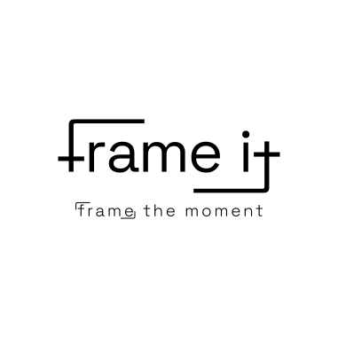
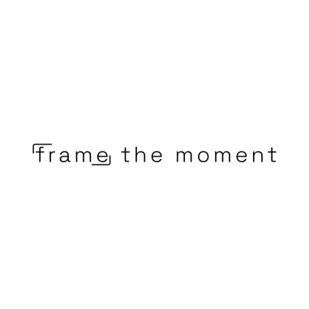
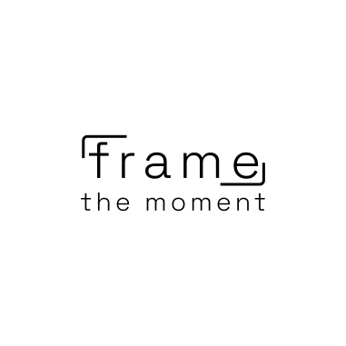

الشعار الكامل
وهو الشعار بكامل عناصره وتكويناته، ويفضّل اعتماده في معظم الحالات متى ما كان ذلك ممكناً، نظراً لشموليته وقدرته على تمثيل الهوية بشكل متكامل وواضح.

الشعار الكامل المعكوس
وهو الشعار بكامل عناصره وتكويناته، ولكن بعكس الألوان لبيان الشكل العام بالتطبيقات ذات اللون الداكن.
الشعار المختزل
وهو الشعار منفرداً دون الشعار الإعلاني، ويمكن استخدامه في جميع المواضع دون قيود، لما يتمتع به من وضوح واستقلالية في تمثيل الهوية.

الشعار المختزل
وهو الشعار منفرداً دون الشعار الإعلاني، ولكن بعكس الألوان لبيان الشكل العام بالتطبيقات ذات اللون الداكن

الشعار الإعلاني
تم رسم الشعار الإعلاني باستخدام نفس الخط المخصص للعلامة التجارية، مع تقليل سمكه مقارنة بالشعار الأساسي، وذلك لضمان عدم التنافس البصري بينهما عند ظهورهما معاً، مما يحافظ على وضوح التسلسل البصري ويبرز الشعار الأساسي كالعنصر الأهم.

الشعار الإعلاني الطولي
ترتيب بديل للشعار الإعلاني يهدف إلى تحقيق أعلى درجات المرونة في الاستخدام، بما يسمح بتكيّفه مع مختلف المساحات والتنسيقات، مع الحفاظ على وضوح الرسالة الإعلانية واتساقها مع الهوية البصرية العامة.